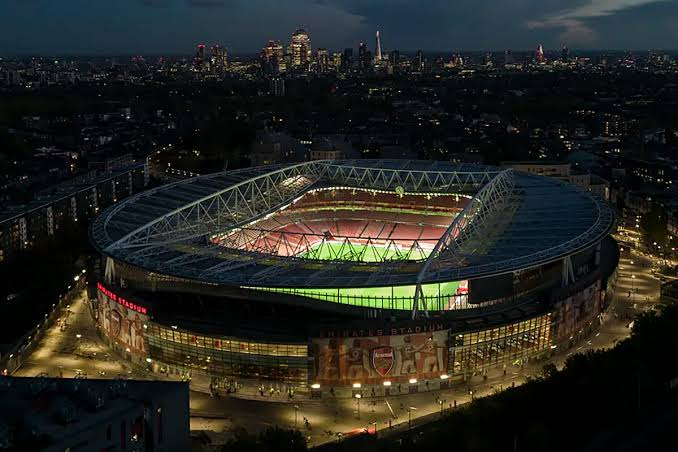

La casa de los Gunners
El Emirates Stadium se encuentra en el norte de Londres y fue inaugurado en 2006. Sustituyó al antiguo estadio de Highbury.
El estadio recibe partidos de fútbol y es un lugar emblemático para los aficionados del Arsenal.
Un recorrido por el club de Londres

El Emirates Stadium se encuentra en el norte de Londres y fue inaugurado en 2006. Sustituyó al antiguo estadio de Highbury.
El estadio recibe partidos de fútbol y es un lugar emblemático para los aficionados del Arsenal.